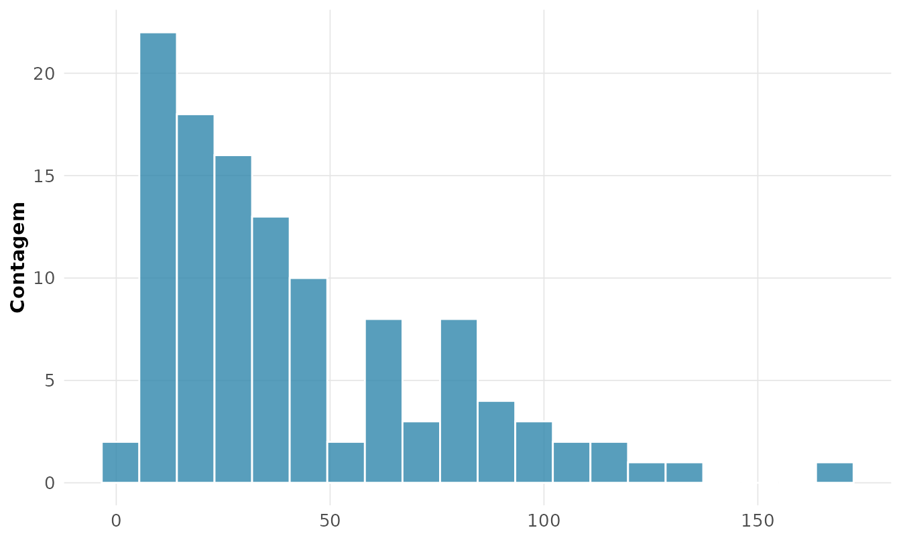
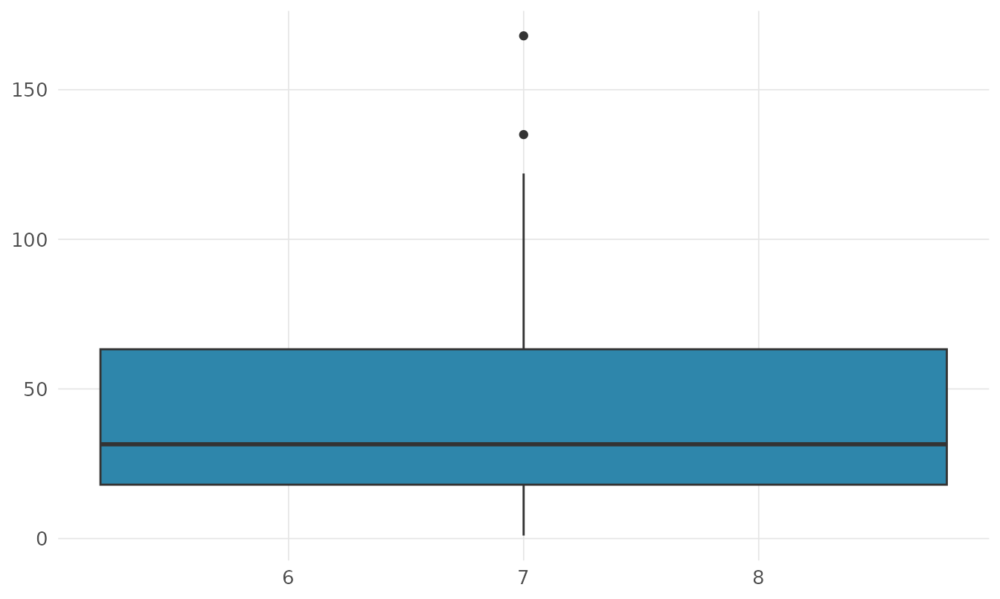
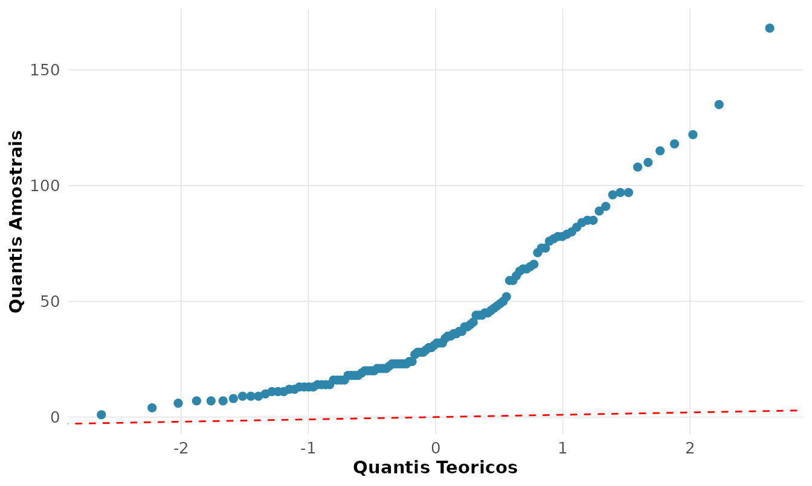

1. Estatistica Descritiva e Analise Exploratoria
Source:vignettes/01-descritiva.Rmd
01-descritiva.RmdAntes de qualquer modelo, olhe os dados
John Tukey, que cunhou o termo Analise Exploratoria de Dados (EDA), dizia que “o maior valor de um grafico e quando ele nos forca a notar o que jamais esperavamos ver”. A estatistica descritiva nao e um preludio menor da inferencia: e onde se aprende a enxergar a forma, o centro, a dispersao e as anomalias de uma variavel antes de assumir qualquer modelo.
Usaremos o conjunto airquality — medicoes diarias reais
de qualidade do ar em Nova York no verao de 1973 (radiacao solar, vento,
temperatura e ozonio).
dados <- airquality
rnp_estrutura(dados)
#> # A tibble: 6 × 5
#> variavel classe n n_faltantes p_faltantes
#> <chr> <chr> <int> <int> <dbl>
#> 1 Ozone integer 153 37 0.242
#> 2 Solar.R integer 153 7 0.0458
#> 3 Wind numeric 153 0 0
#> 4 Temp integer 153 0 0
#> 5 Month integer 153 0 0
#> 6 Day integer 153 0 0Repare que Ozone e Solar.R tem valores
faltantes. A coluna p_faltantes quantifica o problema —
algo que toda analise honesta reporta antes de
prosseguir.
Medidas de tendencia central: qual “centro”?
rnp_descritiva(dados$Ozone)
#> # A tibble: 1 × 21
#> n n_validos n_faltantes soma media mediana moda desvio variancia min
#> <dbl> <dbl> <dbl> <dbl> <dbl> <dbl> <dbl> <dbl> <dbl> <dbl>
#> 1 153 116 37 4887 42.1 31.5 23 33.0 1088. 1
#> # ℹ 11 more variables: q1 <dbl>, q3 <dbl>, max <dbl>, amplitude <dbl>,
#> # iqr <dbl>, cv <dbl>, se_media <dbl>, ic_inf <dbl>, ic_sup <dbl>,
#> # assimetria <dbl>, curtose <dbl>A funcao rnp_descritiva() entrega o panorama completo
numa linha. O ponto pedagogico central esta na comparacao media
(42.1) versus mediana (31.5): a media e maior que a mediana.
Isso e a assinatura de uma distribuicao assimetrica a
direita — poucos dias de ozonio muito alto puxam a media para
cima, enquanto a mediana, sendo um quantil, resiste a esses
extremos.
Na pratica:
- Distribuicao simetrica -> media e mediana coincidem; use a media.
- Distribuicao assimetrica ou com outliers -> a mediana descreve melhor o “tipico”. E por isso que se reporta a renda mediana, nunca a media.
As tres medias e quando cada uma faz sentido
Nem toda media e a aritmetica. O pacote calcula as quatro classicas:
rnp_medias(c(2, 8, 32))
#> # A tibble: 4 × 2
#> tipo valor
#> <chr> <dbl>
#> 1 aritmetica 14
#> 2 geometrica 8
#> 3 harmonica 4.57
#> 4 quadratica 19.1- Aritmetica: para grandezas que se somam (alturas, notas).
- Geometrica: para taxas de crescimento e fatores multiplicativos (um investimento que rende +100% e depois -50% tem media geometrica 0%, nao 25%).
- Harmonica: para razoes como velocidade media de um percurso (km/h) ou P/L de uma carteira.
A desigualdade vale sempre para valores positivos — verifique acima.
Dispersao: o centro nao conta a historia toda
Duas turmas podem ter a mesma media 6,0 e realidades opostas: uma com todos proximos de 6, outra polarizada entre 2 e 10. A dispersao mede isso.
rnp_descritiva(dados$Wind)[c("desvio", "iqr", "cv")]
#> # A tibble: 1 × 3
#> desvio iqr cv
#> <dbl> <dbl> <dbl>
#> 1 3.52 4.1 0.354- Desvio-padrao: dispersao na mesma unidade da variavel.
- IQR (amplitude interquartilica): dispersao robusta, imune a outliers.
- Coeficiente de variacao (CV = DP/media): dispersao relativa, adimensional. So tem sentido para variaveis de razao com media positiva (nunca para temperatura em Celsius!). Permite comparar a variabilidade de grandezas em escalas diferentes.
Momentos: a forma da distribuicao
Media e variancia sao o 1o e o 2o momentos. O 3o e o 4o descrevem a forma:
m <- rnp_momentos(dados$Temp)
m$resumo
#> # A tibble: 1 × 6
#> media variancia desvio_padrao assimetria curtose_excesso n
#> <dbl> <dbl> <dbl> <dbl> <dbl> <dbl>
#> 1 77.9 89.6 9.47 -0.374 -0.429 153- Assimetria (skewness): mede o desequilibrio das caudas. Positiva = cauda longa a direita; negativa = a esquerda; ~0 = simetrica.
- Curtose em excesso: compara o peso das caudas com a Normal (cuja curtose em excesso e 0). Positiva (leptocurtica) = caudas pesadas, mais outliers do que a Normal preveria. Cuidado com o mito: curtose mede peso de cauda, nao “quao pontuda” e a distribuicao.
Tabelas de frequencia
Para variaveis discretas ou agrupadas, a tabela de frequencias organiza a informacao. Para o mes (categorica):
rnp_tabela_frequencia(dados$Month)
#> # A tibble: 5 × 5
#> categoria fa fr fa_acumulada fr_acumulada
#> <chr> <int> <dbl> <int> <dbl>
#> 1 5 31 0.203 31 0.203
#> 2 6 30 0.196 61 0.399
#> 3 7 31 0.203 92 0.601
#> 4 8 31 0.203 123 0.804
#> 5 9 30 0.196 153 1Para uma continua, agrupamos em classes (a regra de Sturges escolhe o numero de classes automaticamente):
head(rnp_tabela_classes(dados$Temp, regra = "sturges"), 4)
#> # A tibble: 4 × 8
#> classe lim_inf lim_sup ponto_medio fa fr fa_acumulada fr_acumulada
#> <chr> <dbl> <dbl> <dbl> <int> <dbl> <int> <dbl>
#> 1 [56,60.6] 56 60.6 58.3 8 0.0523 8 0.0523
#> 2 (60.6,65.1] 60.6 65.1 62.8 10 0.0654 18 0.118
#> 3 (65.1,69.7] 65.1 69.7 67.4 14 0.0915 32 0.209
#> 4 (69.7,74.2] 69.7 74.2 71.9 16 0.105 48 0.314Deteccao de outliers: dois criterios, duas filosofias
rnp_outliers(dados$Ozone, method = "iqr")
#> # A tibble: 2 × 2
#> indice valor
#> <int> <int>
#> 1 62 135
#> 2 117 168- Criterio de Tukey (IQR): marca como outlier o que cai fora de . Robusto — usa quantis, nao se deixa contaminar pelos proprios extremos.
- Criterio z-score: marca o que esta a mais de desvios da media. Fragil em distribuicoes assimetricas, porque media e DP ja foram inflados pelos outliers que se quer detectar.
Para Ozone, assimetrica, o criterio IQR e o mais
defensavel.
A EDA grafica
Numeros resumem; graficos revelam. O histograma mostra a forma:
rnp_grafico_histograma(dados, "Ozone", bins = 20)
A assimetria a direita que diagnosticamos pelos numeros agora salta aos olhos. O boxplot comprime os cinco numeros de Tukey e expoe outliers por grupo:
rnp_grafico_boxplot(dados, x = "Month", y = "Ozone")
O grafico Q-Q confronta os dados com a Normal teorica — pontos fora da reta denunciam o afastamento da normalidade:
rnp_grafico_qq(dados$Ozone)
A curvatura sistematica confirma: Ozone
nao e normal. Esse diagnostico visual e o que
justifica, mais adiante, transformar a variavel ou usar metodos
robustos.
Sintese
| Pergunta | Ferramenta rnp
|
|---|---|
| Qual o centro tipico? |
rnp_descritiva (media vs mediana) |
| Quanto varia? | desvio, IQR, CV |
| Qual a forma? |
rnp_momentos (assimetria, curtose) |
| Ha anomalias? | rnp_outliers |
| Como e a distribuicao? |
rnp_grafico_histograma, _boxplot,
_qq
|
O proximo passo natural — entender por que a media amostral se comporta como se comporta — nos leva a probabilidade (vinheta 2).